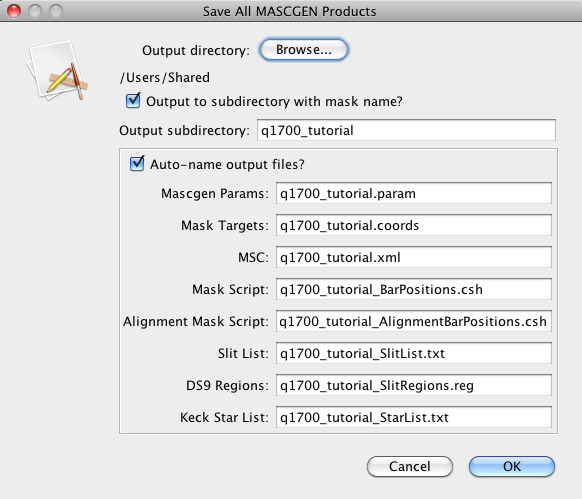

Managing Mask Configurations
New mask configurations are created using
MASCGEN. Once created, they can be saved as MSC files for storage to disk, and later reopened. They may also be modified in a few ways. Mask configurations can also be copied, so that modifications can be made while preserving the original mask.
When a mask configuration is added to the workspace, either by creating a new mask using MASCGEN, opening an existing configuration from disk, or copying an opened configuration, it is listed in the Mask Configuration Control Panel in the upper right portion of MAGMA.
The mask name is shown, along with the status of the mask. Clicking on a mask selects it, and shows the mask in the mask visualization panel. The name of the selected mask can be changed in this panel by double-clicking in the name field of a selected mask.
The control panel contains the available controls for the selected mask:
- Open: open a new configuration from a saved MSC file.
- Copy: copy the selected configuration.
- Close: close the selected configuration. Confirmation is required when closing an unsaved configuration.
- Save MSC: save the current configuration to an MSC file.
- Save All: save the current configuration to an MSC file, and also generate associated data products (see the Data Products page for more information). When this option is selected, a dialog is presented showing the default directory and filenames for the data products produced.

The defaults are specified in the Outputs tab of MASCGEN when the original mask was created. This dialog allows the user to change these defaults before saving.
These controls are also available under the File menu option.